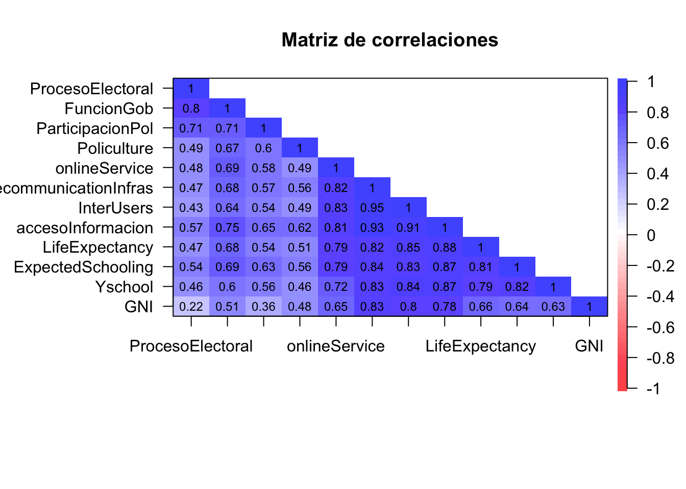
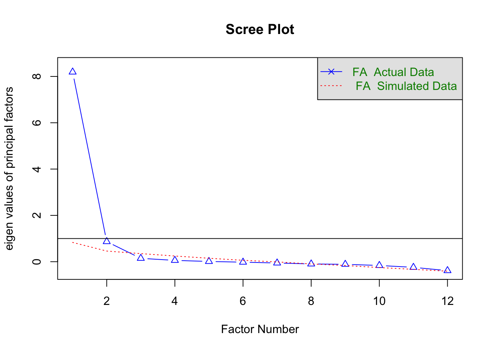
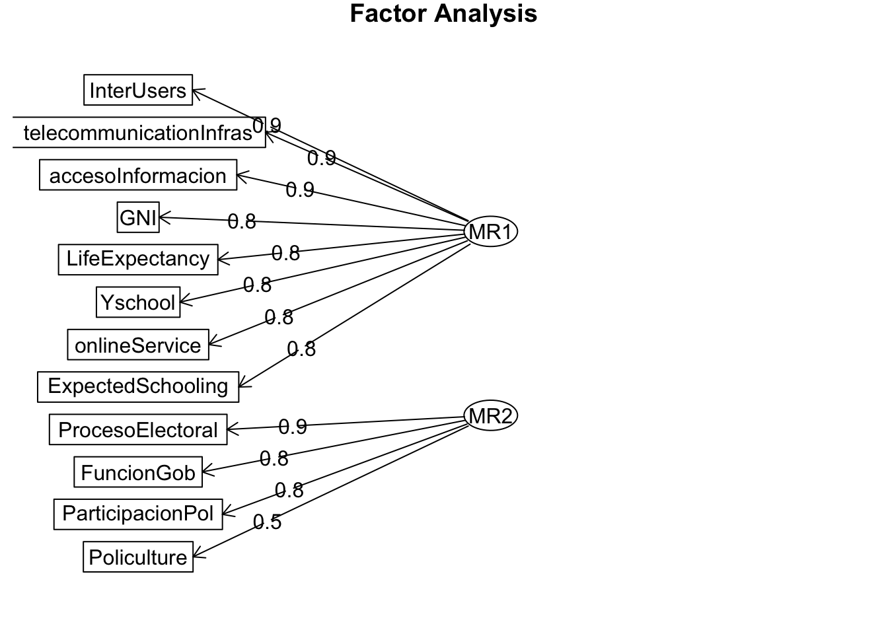
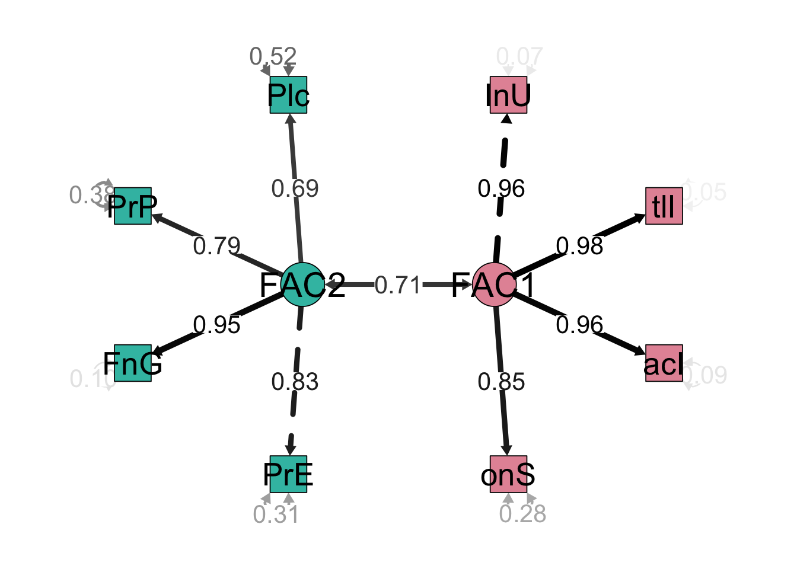
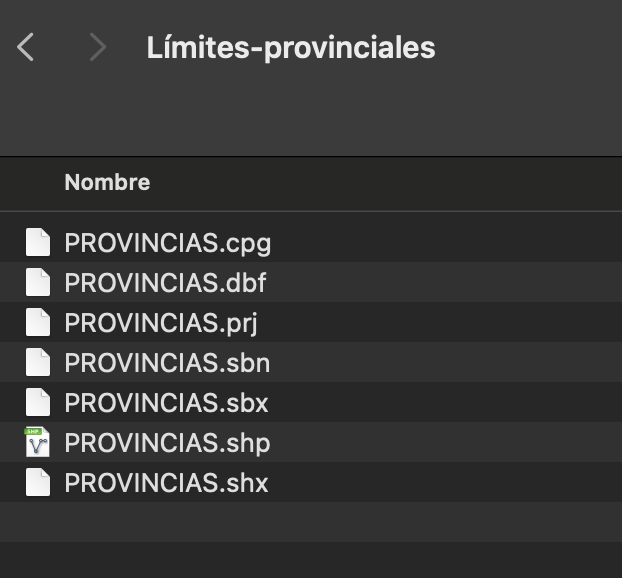
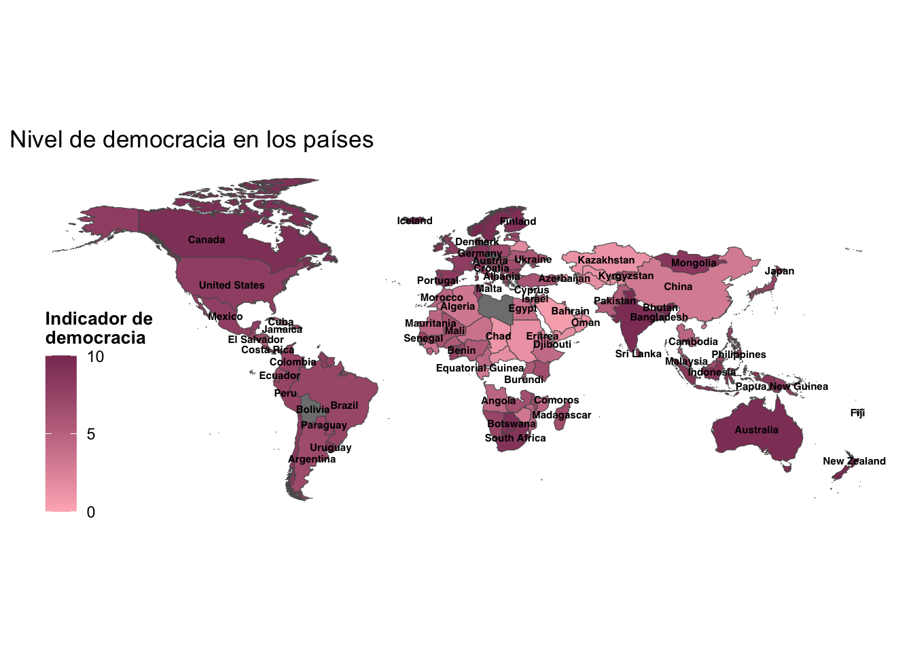
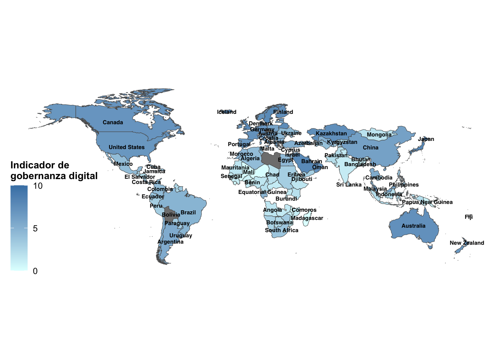
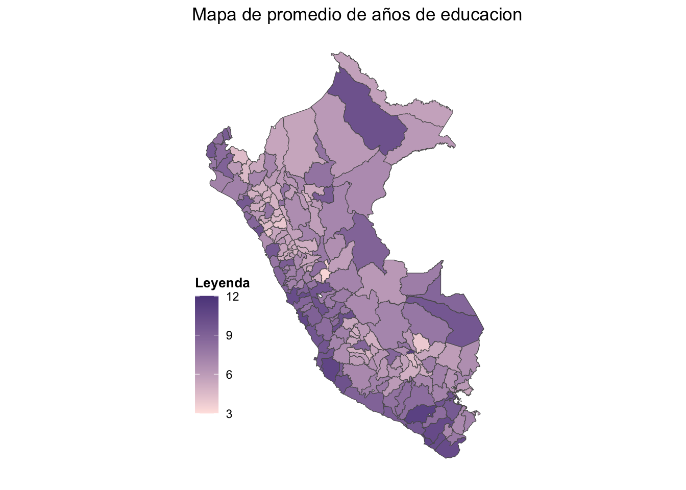
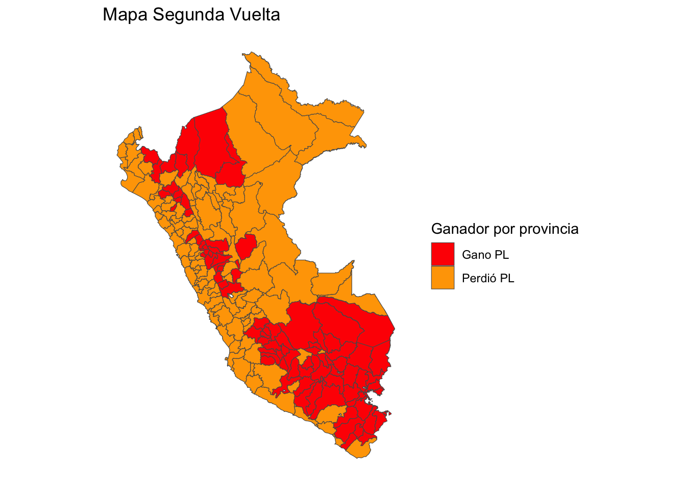

Mapas

FACULTAD DE CIENCIAS SOCIALES - PUCP
Curso: POL 304 - Estadística para el análisis político 2 | Semestre 2024 - 1
Jefas de Práctica: Karina Alcántara 👩🏫 y Lizette Crispín 👩🏫
LLamamos a los paquetes necesarios.
library(rio)
library(data.table)
library(tidyr)
library(dplyr)
library(tidyverse)
library(sp)
library(polycor)
library(psych)
library(lavaan)
library(semPlot)
library(BBmisc)
library(sf) #Para mapas
library(rgdal)
library(maptools) #Para mapas
library(GPArotation)Esta vez usaremos la data “EgovDemocracia”, la cual es un conglomerado de diversos dataset tales como E-gov index, IDH, democracy index, digital access index e internet users by country. Estas datas fueron elegidas debido a la relevancia que han tomado las TIC (tecnologías de información y comunicación) en el acceso a la información por medios digitales. Esto, de cara a las ciencias sociales, nos lleva a una sustancial pregunta: ¿Es el desarrollo de las TICs un factor importante para el desarrollo de la democracia?
En tanto, para reforzar lo aprendido en la segunda parte del curso, haremos uso de las técnicas de factorización y cluster para visualizar los resultados a nivel mundial por medio de la georreferenciación. De esa manera podremos observar el comportamiento de nuestras variables y obtener los primeros hallazgos.
Factores
## [1] "NAME" "ProcesoElectoral"
## [3] "FuncionGob" "ParticipacionPol"
## [5] "Policulture" "onlineService"
## [7] "telecommunicationInfras" "InterUsers"
## [9] "accesoInformacion" "LifeExpectancy"
## [11] "ExpectedSchooling" "Yschool"
## [13] "GNI"Paso 1: Matriz de correlaciones
Generamos la matriz de correlaciones para identificar qué variables de nuestra subdata están correlacionadas.
corMatrix=polycor::hetcor(data2)$correlations
cor.plot(corMatrix,
numbers=T, #Se muestren los numeros de las correlaciones
upper=F, #Que aparezca la segunda parte
main= "Matriz de correlaciones",#Titulo
show.legend=T)#Mostrar leyenda
Paso 2: Corroborar si se puede factorizar
KMO
## Kaiser-Meyer-Olkin factor adequacy
## Call: psych::KMO(r = data2)
## Overall MSA = 0.92
## MSA for each item =
## ProcesoElectoral FuncionGob ParticipacionPol
## 0.79 0.88 0.95
## Policulture onlineService telecommunicationInfras
## 0.90 0.96 0.92
## InterUsers accesoInformacion LifeExpectancy
## 0.93 0.92 0.94
## ExpectedSchooling Yschool GNI
## 0.97 0.94 0.90Bartlett
cortest.bartlett(corMatrix,n=nrow(data2))$p.value>0.05 #Menor a 0.05 saldrá FALSE, mayor a 0.05 saldra TRUE## [1] FALSEPaso 3: Análisis Factorial Exploratorio
Gráfico de sedimentación

## Parallel analysis suggests that the number of factors = 2 and the number of components = NARecomienda 2 factores :)
Autovalores
## [1] 8.46052308 1.33255837 0.60200699 0.36258024 0.30368034 0.28329341
## [7] 0.18483188 0.15279471 0.12966662 0.09546860 0.05418913 0.03840663También recomienda 2 factores :)
Factorizar
## Factor Analysis using method = minres
## Call: fa(r = data2, nfactors = 2, rotate = "varimax", fm = "minres")
## Standardized loadings (pattern matrix) based upon correlation matrix
## MR1 MR2 h2 u2 com
## ProcesoElectoral 0.16 0.87 0.78 0.215 1.1
## FuncionGob 0.43 0.82 0.85 0.154 1.5
## ParticipacionPol 0.32 0.77 0.69 0.311 1.3
## Policulture 0.40 0.54 0.45 0.545 1.8
## onlineService 0.76 0.40 0.73 0.269 1.5
## telecommunicationInfras 0.91 0.34 0.94 0.061 1.3
## InterUsers 0.93 0.29 0.94 0.056 1.2
## accesoInformacion 0.86 0.47 0.96 0.044 1.5
## LifeExpectancy 0.79 0.40 0.79 0.212 1.5
## ExpectedSchooling 0.76 0.49 0.81 0.193 1.7
## Yschool 0.78 0.37 0.75 0.249 1.4
## GNI 0.80 0.16 0.66 0.335 1.1
##
## MR1 MR2
## SS loadings 5.91 3.44
## Proportion Var 0.49 0.29
## Cumulative Var 0.49 0.78
## Proportion Explained 0.63 0.37
## Cumulative Proportion 0.63 1.00
##
## Mean item complexity = 1.4
## Test of the hypothesis that 2 factors are sufficient.
##
## The degrees of freedom for the null model are 66 and the objective function was 15.62 with Chi Square of 2049.4
## The degrees of freedom for the model are 43 and the objective function was 1.11
##
## The root mean square of the residuals (RMSR) is 0.03
## The df corrected root mean square of the residuals is 0.03
##
## The harmonic number of observations is 135 with the empirical chi square 13.72 with prob < 1
## The total number of observations was 137 with Likelihood Chi Square = 144.43 with prob < 6.9e-13
##
## Tucker Lewis Index of factoring reliability = 0.921
## RMSEA index = 0.131 and the 90 % confidence intervals are 0.108 0.156
## BIC = -67.12
## Fit based upon off diagonal values = 1
## Measures of factor score adequacy
## MR1 MR2
## Correlation of (regression) scores with factors 0.98 0.94
## Multiple R square of scores with factors 0.97 0.89
## Minimum correlation of possible factor scores 0.93 0.78
Tenemos una recomendación del modelo exploratorio, corroboremos si ello va de la mano con el conocimiento de científicos sociales y ajustemos los factores. ¿Cómo se llamarían los factores?
Modelo_confir = "FAC1 =~ InterUsers + telecommunicationInfras + accesoInformacion + onlineService
FAC2 =~ ProcesoElectoral + FuncionGob + ParticipacionPol+Policulture"
Modelo_confir## [1] "FAC1 =~ InterUsers + telecommunicationInfras + accesoInformacion + onlineService\n FAC2 =~ ProcesoElectoral + FuncionGob + ParticipacionPol+Policulture"Lo que se realizaría es indicar el nombre de cada factor, y qué variables las integran, solo indicamos el nombre de estas variables, en el siguiente comando indicaríamos la base de datos.
## lavaan 0.6.16 ended normally after 145 iterations
##
## Estimator ML
## Optimization method NLMINB
## Number of model parameters 17
##
## Number of observations 137
##
## Model Test User Model:
##
## Test statistic 93.269
## Degrees of freedom 19
## P-value (Chi-square) 0.000
##
## Parameter Estimates:
##
## Standard errors Standard
## Information Expected
## Information saturated (h1) model Structured
##
## Latent Variables:
## Estimate Std.Err z-value P(>|z|)
## FAC1 =~
## InterUsers 1.000
## tlcmmnctnInfrs 0.008 0.000 32.117 0.000
## accesoInformcn 0.008 0.000 27.858 0.000
## onlineService 0.009 0.001 16.959 0.000
## FAC2 =~
## ProcesoElectrl 1.000
## FuncionGob 0.815 0.058 14.018 0.000
## ParticipacinPl 0.518 0.048 10.892 0.000
## Policulture 0.389 0.043 9.075 0.000
##
## Covariances:
## Estimate Std.Err z-value P(>|z|)
## FAC1 ~~
## FAC2 56.566 9.255 6.112 0.000
##
## Variances:
## Estimate Std.Err z-value P(>|z|)
## .InterUsers 56.105 9.815 5.716 0.000
## .tlcmmnctnInfrs 0.003 0.001 4.450 0.000
## .accesoInformcn 0.004 0.001 6.285 0.000
## .onlineService 0.021 0.003 7.824 0.000
## .ProcesoElectrl 3.831 0.565 6.782 0.000
## .FuncionGob 0.602 0.205 2.937 0.003
## .ParticipacinPl 1.379 0.191 7.221 0.000
## .Policulture 1.387 0.180 7.726 0.000
## FAC1 745.890 96.923 7.696 0.000
## FAC2 8.452 1.447 5.842 0.000Nos fijamos en la tabla de Latent Variables, y que las variables tengan un pvalue menor a 0.05 para concluir que si aportan a los factores de manera significativa.
Graficamos 🤓
semPaths(modelo, intercepts = FALSE,edge.label.cex=1.5, optimizeLatRes = TRUE, groups = "lat",pastel = TRUE, exoVar = FALSE, sizeInt=5,edge.color ="black",esize = 6, label.prop=2,sizeLat = 6,"std", layout="circle2")
Observemos las “señales gráficas”: Vértices, nodos, colores.
Agregamos los factores a la base de datos
factorial_casos<-as.data.frame(factorial$scores)
data2$factor1<- factorial_casos$MR1
data2$factor2<- factorial_casos$MR2
data$Egov = normalize(data2$factor1,
method = "range",
margin=2, # by column
range = c(0, 10))
data$Demo = normalize(data2$factor2,
method = "range",
margin=2, # by column
range = c(0, 10))Georeferencia 🗺️
Mapa del mundo
Para poder hacer los mapas necesitas tener descargar los límites de los países, lo puedes buscar en internet y encontrarás una carpeta. Debes tener toda la carpeta con todos los archivos dentro con un mismo nombre.
IMPORTANTE: NO BORRAR LOS OTROS ARCHIVOS QUE COMPONEN LA CARPETA.
Como en este ejemplo:

folder="world_map" #Indicamos el nombre de la carpeta que contiene los límites
file="world_map.shp" #Indicamos el nombre del shapefile (".shp").
mapaFile=file.path(folder,file) #Indicamos la ruta en donde se encuentra el archivo## Reading layer `world_map' from data source
## `/Users/Karina/Estadistica-2/world_map/world_map.shp' using driver `ESRI Shapefile'
## Simple feature collection with 246 features and 11 fields
## Geometry type: MULTIPOLYGON
## Dimension: XY
## Bounding box: xmin: -180 ymin: -90 xmax: 180 ymax: 83.57027
## Geodetic CRS: WGS 84Combino mis datas
world_map_data=inner_join(worldmap,data,by="NAME") #Agregamos la información de los límites a la data originalHeatmap DEMO
library(ggplot2)
ggplot(world_map_data)+
geom_sf(aes(fill=Demo),lwd=0.2)+
geom_sf_text(aes(label =NAME), size = 2
,family="sans",fontface = "bold",check_overlap = TRUE
)+
guides(fill=guide_colorbar(title = "Indicador de\ndemocracia")) +
labs(title = "Nivel de democracia en los países"
# ,subtitle = "añadir si se desea",
#caption = "Fuente:añadir si se desea"
) +
scale_fill_gradient(breaks=c(0,5,10),limits= c(0,10), high = "hotpink4", low = "lightpink", guide = "colorbar" ) +
theme_bw()+
theme(
axis.text.x = element_blank(),
axis.text.y = element_blank(),
axis.ticks = element_blank(),
axis.title = element_blank(),
panel.border = element_blank(),
panel.grid.major = element_blank(),
panel.grid.minor = element_blank()
)+
theme(
legend.position=c(0.1, 0.3),
legend.title = element_text(colour="black", size=10, face="bold"))
Heatmap E-GOV
ggplot(world_map_data)+
geom_sf(aes(fill=Egov),lwd=0.2)+
geom_sf_text(aes(label = NAME), size = 2
,family="sans",fontface = "bold",check_overlap = TRUE
)+
guides(fill=guide_colorbar(title = "Indicador de\ngobernanza digital")) + #El "\n" nos permite dar "enter" y saltar de línea para que entre todo el título de la leyenda
scale_fill_gradient(breaks=c(0,5,10),limits= c(0,10), high = "steelblue", low = "lightcyan", guide = "colorbar") +
theme_bw()+
theme(
axis.text.x = element_blank(),
axis.text.y = element_blank(),
axis.ticks = element_blank(),
axis.title = element_blank(),
panel.border = element_blank(),
panel.grid.major = element_blank(),
panel.grid.minor = element_blank()
)+
theme(
legend.position=c(0.1, 0.3),
legend.title = element_text(colour="black", size=10, face="bold")
)
Mapa de Perú
Importo mi shapefile
## Reading layer `PROVINCIAS' from data source
## `/Users/Karina/Estadistica-2/Límites-provinciales/PROVINCIAS.shp'
## using driver `ESRI Shapefile'
## Simple feature collection with 196 features and 79 fields
## Geometry type: MULTIPOLYGON
## Dimension: XY
## Bounding box: xmin: -81.32823 ymin: -18.35093 xmax: -68.65228 ymax: -0.03860597
## Geodetic CRS: WGS 84Creamos código unificador
## [1] "OBJECTID" "NOMBDEP" "IDPROV" "CCPP" "CCDD"
## [6] "NOMBPROV" "FUENTE" "POB_PROYEC" "POBTOTAL" "POB_EDAD_T"
## [11] "POB_EDAD_1" "POB_EDAD_E" "POB_EDAD_2" "DENSIDAD" "POBMASCU"
## [16] "POBFEMEN" "POBMASCU_P" "POBFEMEN_P" "R_MASCULIN" "POBURBANA"
## [21] "POBRURAL" "POBURBANA_" "POBRURAL_P" "EDAD_PROME" "EDAD_MEDIA"
## [26] "POB_0_14" "POB_0_14_P" "POB_15_29" "POB_15_29_" "POB_30_59"
## [31] "POB_30_59_" "POB_60_MAS" "POB_60_M_1" "POB_ANALFA" "POB_ANAL_1"
## [36] "HOMBRES_AN" "HOMBRES__1" "MUJERES_AN" "MUJERES__1" "MUJERES_ED"
## [41] "MUJERES__2" "TOTAL_MADR" "MADRES_SOL" "MADRES_S_1" "MUJERES_AD"
## [46] "MADRES_ADO" "MADRES_A_1" "AL_MENOS_1" "AL_MENOS_2" "SIN_DISCAP"
## [51] "SIN_DISC_1" "ALGUNA_NBI" "NBI_PORC" "VIV_PARTIC" "VIV_PART_1"
## [56] "VIV_PART_2" "HOGARES" "IC_INF" "IC_SUP" "UBIC_POBMO"
## [61] "TOTAL_DEFU" "TOTAL_DE_1" "TOTAL_DE_2" "NAC_BAJOPE" "NAC_BAJO_1"
## [66] "MUJERES_NA" "MUJERES__3" "HOMBRES_NA" "HOMBRES__2" "TOTAL_NACI"
## [71] "IND_121951" "IND_122042" "IND_122047" "IND_516462" "IND_516484"
## [76] "Shape_Leng" "Shape_Area" "Shape_Le_1" "Shape_Ar_1" "geometry"Combinar bases
ggplot(peru2)+
geom_sf(aes(fill=educacion),lwd=0.2)+
guides(fill=guide_colorbar(title = "Leyenda")) +
labs(title = "Mapa de promedio de años de educacion")+
scale_fill_gradient(breaks=c(3,6,9,12),limits= c(3,12), high = "mediumpurple4", low = "mistyrose1", guide = "colorbar" ) +
theme_bw()+
theme(
axis.text.x = element_blank(),
axis.text.y = element_blank(),
axis.ticks = element_blank(),
axis.title = element_blank(),
panel.border = element_blank(),
panel.grid.major = element_blank(),
panel.grid.minor = element_blank()
)+
theme(
legend.position=c(0.1, 0.3),
legend.title = element_text(colour="black", size=10, face="bold"),
#"left","bottom"
)
## [1] "OBJECTID" "NOMBDEP" "IDPROV" "CCPP"
## [5] "CCDD" "NOMBPROV" "FUENTE" "POB_PROYEC"
## [9] "POBTOTAL" "POB_EDAD_T" "Fuerza Popular" "POB_EDAD_E"
## [13] "POB_EDAD_2" "DENSIDAD" "POBMASCU" "POBFEMEN"
## [17] "POBMASCU_P" "POBFEMEN_P" "R_MASCULIN" "POBURBANA"
## [21] "POBRURAL" "POBURBANA_" "POBRURAL_P" "EDAD_PROME"
## [25] "EDAD_MEDIA" "POB_0_14" "POB_0_14_P" "POB_15_29"
## [29] "POB_15_29_" "POB_30_59" "POB_30_59_" "POB_60_MAS"
## [33] "POB_60_M_1" "POB_ANALFA" "POB_ANAL_1" "HOMBRES_AN"
## [37] "HOMBRES__1" "MUJERES_AN" "MUJERES__1" "MUJERES_ED"
## [41] "MUJERES__2" "TOTAL_MADR" "MADRES_SOL" "MADRES_S_1"
## [45] "MUJERES_AD" "MADRES_ADO" "MADRES_A_1" "AL_MENOS_1"
## [49] "AL_MENOS_2" "SIN_DISCAP" "SIN_DISC_1" "ALGUNA_NBI"
## [53] "NBI_PORC" "VIV_PARTIC" "VIV_PART_1" "VIV_PART_2"
## [57] "HOGARES" "IC_INF" "IC_SUP" "UBIC_POBMO"
## [61] "TOTAL_DEFU" "TOTAL_DE_1" "TOTAL_DE_2" "NAC_BAJOPE"
## [65] "NAC_BAJO_1" "MUJERES_NA" "MUJERES__3" "HOMBRES_NA"
## [69] "HOMBRES__2" "TOTAL_NACI" "IND_121951" "IND_122042"
## [73] "IND_122047" "IND_516462" "IND_516484" "Shape_Leng"
## [77] "Shape_Area" "Shape_Le_1" "Shape_Ar_1" "ubigeoProvincia"
## [81] "ubigeoRegion" "nombreRegion" "nombreProvincia" "PL"
## [85] "FP" "educacion" "ingresos" "IDH"
## [89] "geometry"peru2 <- peru2 %>%
mutate(ganopl = ifelse(PL>`Fuerza Popular`,"Gano PL","Perdió PL"))
peru2$ganopl=as.factor(peru2$ganopl)ggplot(peru2)+
geom_sf(aes(fill=ganopl),lwd=0.2)+
scale_fill_manual(values = c("Gano PL" = "red", "Perdió PL" = "orange"))+
labs(title = "Mapa Segunda Vuelta")+
theme_bw()+
theme(
axis.text.x = element_blank(),
axis.text.y = element_blank(),
axis.ticks = element_blank(),
axis.title = element_blank(),
panel.border = element_blank(),
panel.grid.major = element_blank(),
panel.grid.minor = element_blank()
)+
guides(fill=guide_legend(title = "Ganador por provincia"))